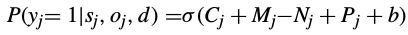

A Hierarchical Structured Self-Attentive Model for Extractive Document Summarization (HSSAS)
"What" part of the paper
The paper describes how we can use sentence and document representation for generating extractive summary. They treat summary generation task as a classification task to determine if each sentence should be present in the summary or not.
"How" part of the paper
First they computed sentence and document representation using hierarchical attention mechanism. The model is shown below:

For words in a sentence, they took the embeddings and feed it to a Bi-directional LSTM network. Attention is taken accross hidden states given out by the Bi-LSTM network to get the sentence representation. This is done for every sentence and we get representations for all the sentences in a document. Hs is concatenated hidden states of Bi-LSTM network and ws are the attention weights. si is the sentence representation of ith sentence.
Similarly, the sentence representation is passed through another Bi-LSTM network and again a similar attention method is applied to get document representation.

CLassification Layer is present at the end, it is a logistic layer which takes a binary decision if sentence is present in the summary or not. For this classification, they comepute abstract features. For jth sentence, features are computed as follows:
The information content of the jth sentence in the document is represented by:
The salience of the sentence with respect to the document is given by:
The position of the sentence with respect to the document is modeled by:
Where pj is the positional embedding of the sentence calculated by concatenating the embeddings corresponding to the forward and backward position indices of the sentence in the document.
The novelty of the sentence with respect to the current state of the summary is given by:
oj is the representation of summary generated after seeing (j-1) sentences of document. It is given as:
All the W's in above equation are weights which will get trained.
yi is a binary number which tells if ith sentence should be present in the summary or not.
Including summary representation in scoring function allows the model to take into account previously generated summary and take decisions accoriding to it.
Putting together all the above equations, we get the final probability distribution as follows:
The negative log likelihood which is minimized is given as:
where yjd is the binary summary label jth sentence in dth document. nd is number of sentences in document d and N is number of documents.